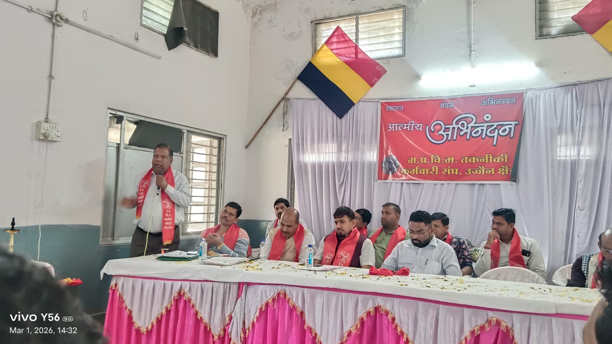
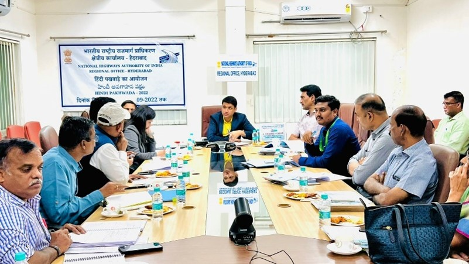
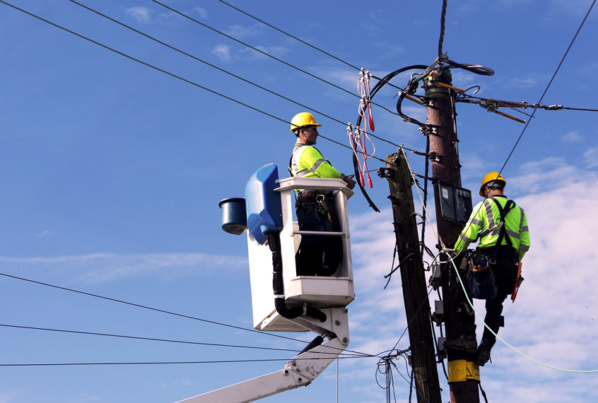
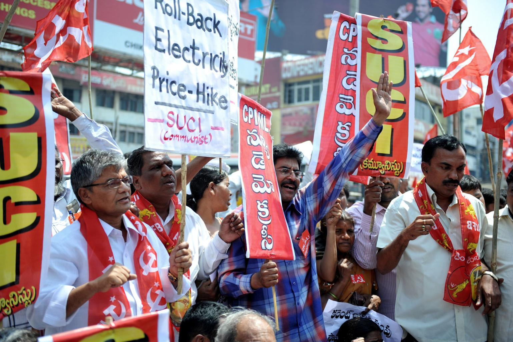
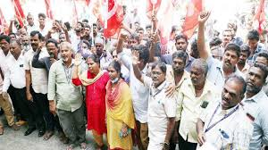

म.प्र.वि.मं. तकनीकी कर्मचारी संघ
श्रमेव जयते
श्रमेव जयते



म.प्र.वि.मं. तकनीकी कर्मचारी संघ तकनीकी कर्मचारियों के अधिकारों की रक्षा और उनके हितों के लिए कार्य करने वाला संगठन है।

तकनीकी कर्मचारियों की समस्याओं पर चर्चा।

प्रदेश के कर्मचारियों की भागीदारी।

नए सदस्यों का स्वागत।





प्रांतीय संयोजक

कंपनी संयोजक – पूर्व क्षेत्र जबलपुर

कंपनी संयोजक – मध्य क्षेत्र भोपाल

कंपनी संयोजक – पावर मैनेजमेंट

कंपनी संयोजक – पश्चिम क्षेत्र इंदौर

कंपनी संयोजक – जेन्को

कोषाध्यक्ष भोपाल

प्रांतीय मीडिया प्रभारी भोपाल